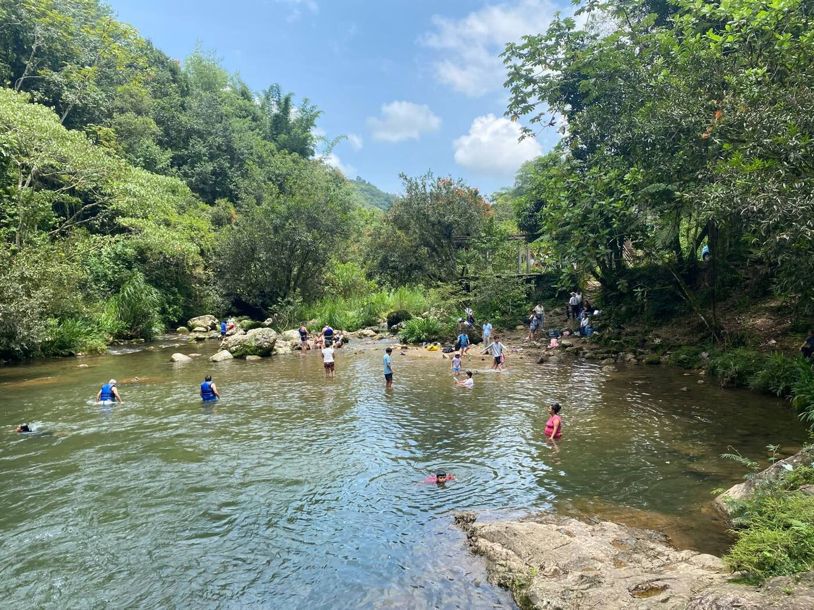
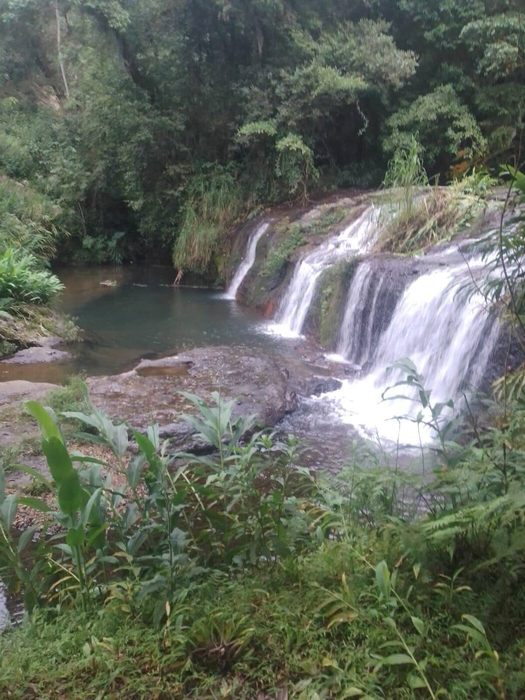
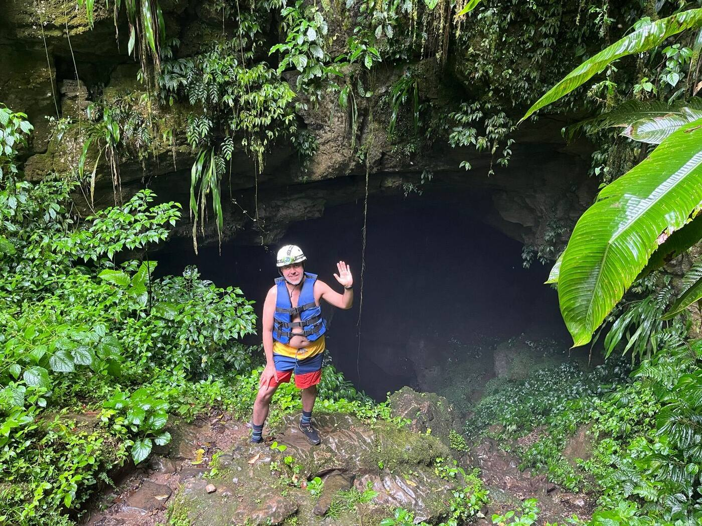
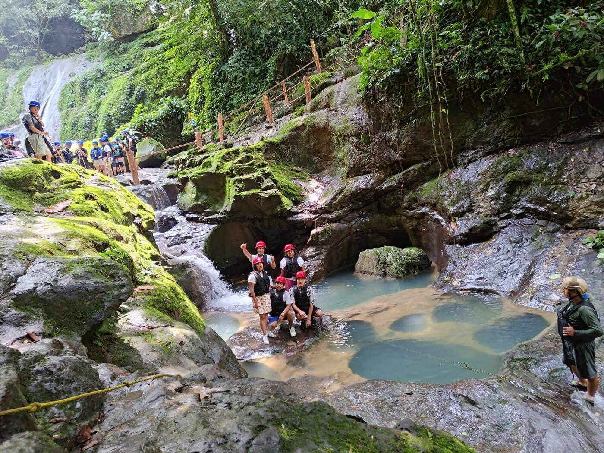
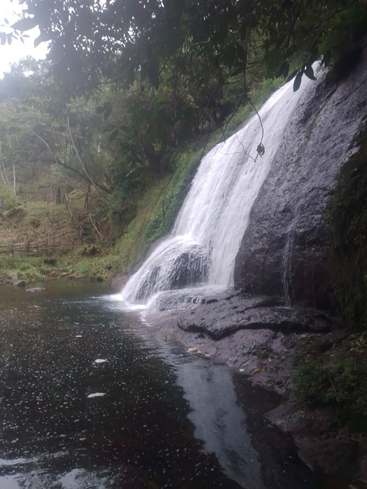
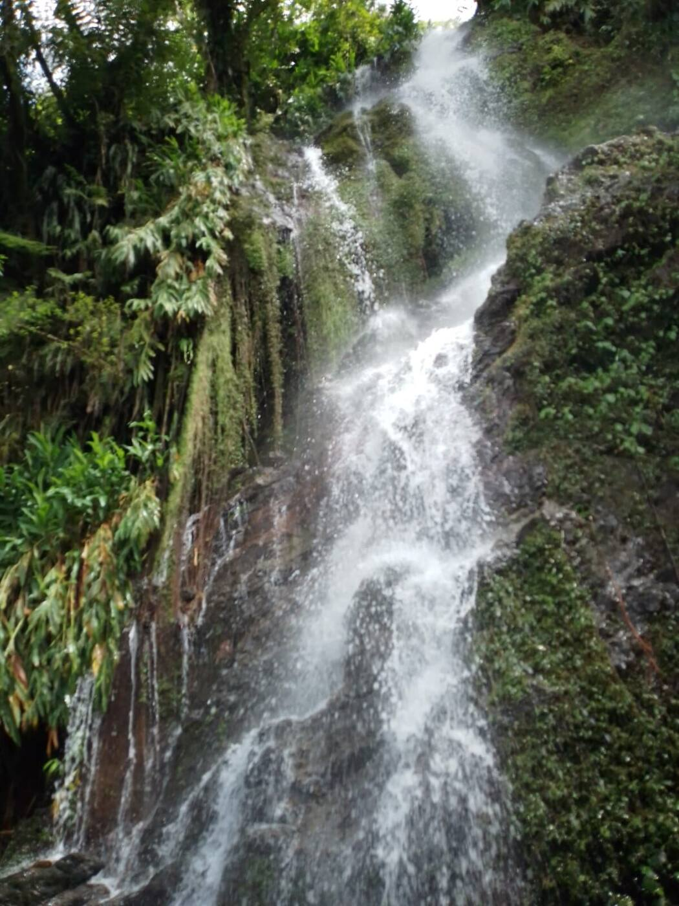
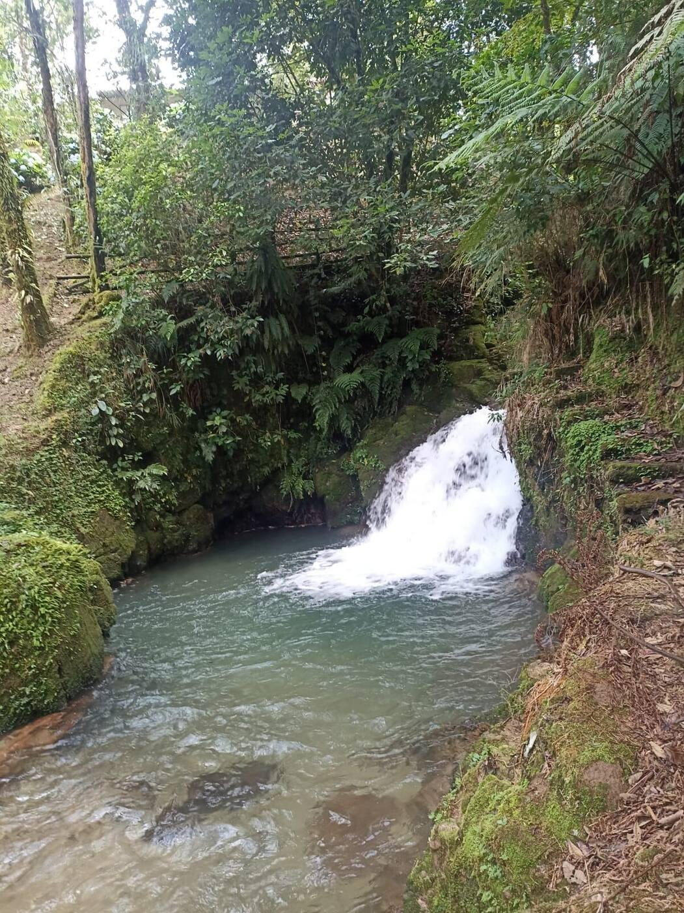
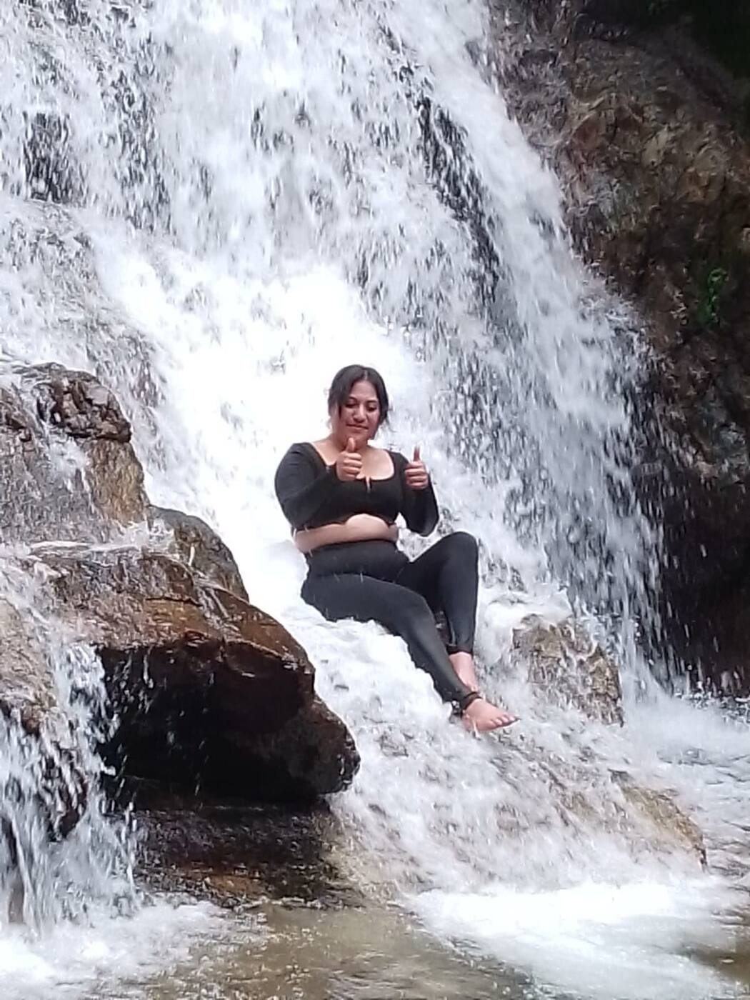
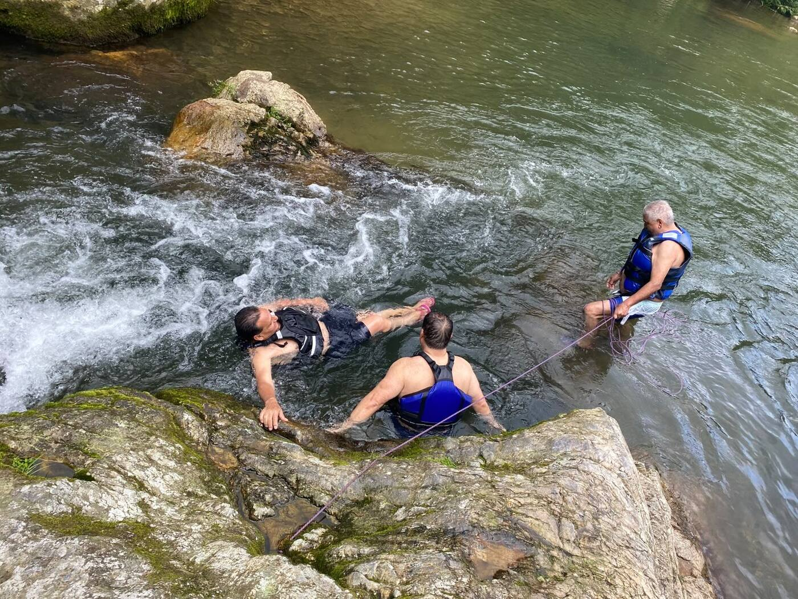
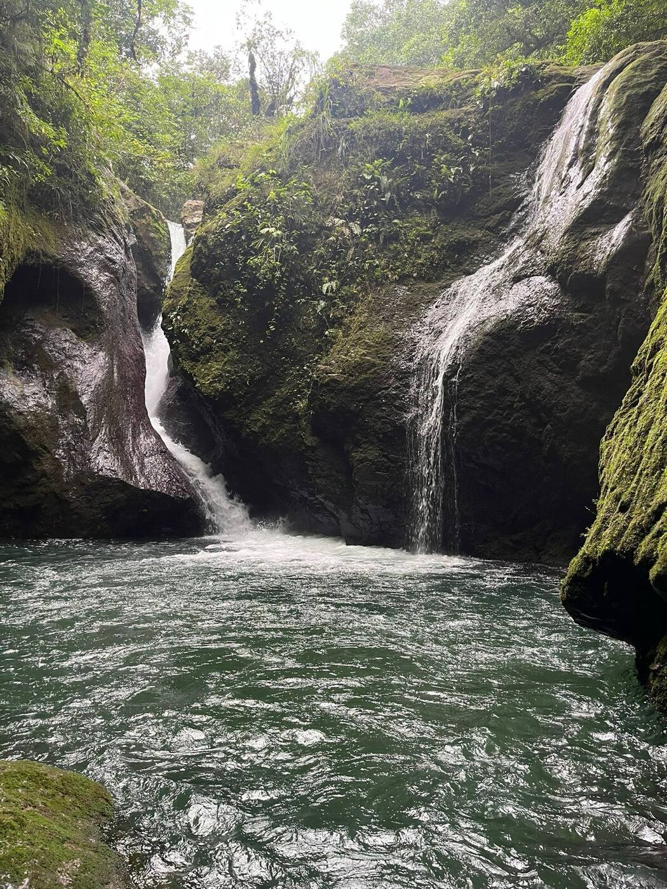

Gusta Tours — Agencia Turística en Cuetzalan, Puebla
Cuetzalan en su estado más puro.
Aventura, naturaleza y origen.
Recorridos guiados a |
Somos Gusta Tours, tu agencia de ecoturismo en Cuetzalan. Te llevamos a cascadas, cuevas y ríos con guías locales, equipo de seguridad completo y un compromiso real con el turismo responsable — para que tu aventura deje huella solo en tus recuerdos.

de ecoturismo
Sobre Gusta Tours
Turismo que conecta. Naturaleza que enamora.
Gusta Tours nació en Cuetzalan, Puebla, con una misión clara: acercarte a la biodiversidad y los paisajes exuberantes de la Sierra Norte a través de recorridos guiados a cascadas, ríos y cuevas. Creemos en un turismo que suma — que emociona a quien viaja y cuida a quien lo recibe.
Cascadas & Ríos
Recorridos guiados a las cascadas y ríos más espectaculares de Cuetzalan, con pozas de agua cristalina para nadar y desconectar.
Cuevas & Grutas
Exploración de cuevas y grutas naturales con equipo de seguridad completo y guías que conocen cada rincón del camino.
Turismo Responsable
Cada recorrido está pensado para minimizar nuestro impacto y maximizar el beneficio para la comunidad y el entorno natural.
Nuestros Tours
Vive Cuetzalan desde adentro.
Tres formas de descubrir la magia natural de la Sierra Norte de Puebla, con la seguridad y el acompañamiento de guías locales.

Recorrido a Cascadas
Camina entre bosque y niebla hasta llegar a caídas de agua que parecen sacadas de un sueño.
- Senderismo guiado por bosque de niebla y vegetación exuberante
- Acceso a cascadas y pozas de agua cristalina para nadar
- Miradores y puntos fotográficos a lo largo del recorrido
- Recomendado para familias y grupos de todas las edades
- Equipo básico de seguridad incluido

Exploración de Cuevas
Adéntrate en formaciones naturales de piedra, entre historia geológica y biodiversidad subterránea.
- Recorrido guiado por cuevas y grutas naturales
- Casco y chaleco salvavidas incluidos
- Cruce de ríos subterráneos y pasos entre rocas
- Guías capacitados en primeros auxilios y seguridad
- Experiencia apta para aventureros con espíritu curioso

Río y Pozas Naturales
Aguas color turquesa, piedras pulidas por el tiempo y tardes enteras de convivencia familiar.
- Nado en pozas naturales de aguas cristalinas
- Ideal para planes familiares y grupos de amigos
- Áreas para descansar y disfrutar del entorno
- Acompañamiento de guías durante todo el recorrido
- Contacto directo con la biodiversidad de la región
¿No sabes qué tour elegir? Cuéntanos qué buscas y te ayudamos a armar tu recorrido ideal.
Consultar por WhatsApp¿Por qué Gusta Tours?
La forma correcta de vivir Cuetzalan.
Guías locales expertos
Conocemos cada sendero, cascada y cueva porque son parte de nuestra tierra.
Seguridad en cada paso
Cascos, chalecos salvavidas y equipo adecuado en cada recorrido de riesgo.
Turismo responsable
Cuidamos el entorno natural y apoyamos a la comunidad local en cada tour que realizamos.
Experiencias para todos
Familias, grupos de amigos o viajeros solitarios: adaptamos el recorrido a ti.
Galería
Momentos Gusta Tours
Un vistazo real a nuestros recorridos, nuestros paisajes y la forma en que vivimos la naturaleza de Cuetzalan.






Visítanos
Vive tu próxima aventura en Cuetzalan
Estamos en Cuetzalan, Puebla, listos para llevarte a descubrir cascadas, cuevas y ríos. Escríbenos por WhatsApp y armamos juntos tu recorrido ideal.
-
Cuetzalan del Progreso, Puebla — Sierra Norte de Puebla
Cómo llegar (Google Maps) - (WhatsApp)
- Guías locales certificados en cada recorrido